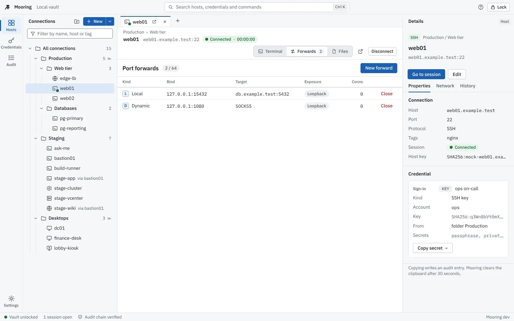

Secure remote access manager for SSH, RDP, VNC, Kubernetes and vSphere
One encrypted vault and one keyboard-first window for every server, desktop and cluster you administer. Open source, local-first, no account, built in Rust.
Version 0.2.0 is in release. It adds jump hosts, RD Gateway, FIDO2 security keys and smart cards for SSH, Touch ID and Windows Hello unlock, encrypted backups, dynamic Vault secrets, 1Password and Bitwarden, and a new, calmer interface, after nine security reviews. Installers carry Sigstore-signed checksums and build provenance; they are not notarized or Authenticode-signed yet. See the roadmap.

- Release
- checking
- Stars
- checking
- License
- MIT
- Platforms
- macOS, Windows, Linux
- Core
- Rust,
forbid(unsafe) - Reviews
- 9 published
Why Mooring
A remote access manager holds the keys to everything you run. Mooring treats that as the design constraint. Each point below is backed by a public decision record and has passed nine published security reviews.
-
Argon2id + XChaCha20-Poly1305 vault, sealed field by field
Your master password is stretched with Argon2id, calibrated to about 500 ms on your machine. The derived key wraps a random data key, and every secret field is sealed on its own, bound to its record and field name. Optional Touch ID or Windows Hello unlock keeps the key behind a fresh biometric check; encrypted backups use a separate passphrase. ADR-0002, ADR-0022
-
Bring your own secret manager
Point a credential at HashiCorp Vault, OpenBao, 1Password Connect or Bitwarden Secrets Manager and Mooring fetches the password, key or kubeconfig at connect time, holds it only for the handshake and never writes it to disk. Vault can issue short-lived database credentials and SSH certificates per session; leases are revoked when the session closes or the vault locks. Setup guide, ADR-0026
-
Hardware-backed sign-in
FIDO2 security keys and PIV smart cards sign through your ssh-agent. Mooring asks you to touch the key or enter the card's PIN, verifies the signature before it is sent, never stores the PIN and never falls back to a password. Guide, ADR-0024
-
Trust on first use, with a hard stop on change
SSH offers only modern key exchange, ciphers and MACs: no SHA-1, no CBC, no
ssh-rsa, Terrapin strict-kex on. New SSH host keys, RDP and RD Gateway certificates, and every jump host in a chain need your approval with the SHA-256 fingerprint. A changed key or certificate ends the connection, with no "continue anyway". ADR-0007, ADR-0025 -
Hash-chained audit log
Unlocks, credential use, password copies, trust decisions, sessions, jump hops, gateway sign-ins and power actions go into a SHA-256 chain you can filter, verify in the app and mirror to syslog. A deleted or edited entry breaks the chain visibly.
-
Read-only by construction (Kubernetes, vSphere inventory)
The Kubernetes client has a closed route list: list, logs, exec and port-forward are the only requests it can make, so nothing that creates, changes or deletes an API object leaves your machine. vSphere inventory lands in a read-only synced folder; the only writes are the VM power actions you opt into, each behind a native confirmation. ADR-0014, ADR-0015
-
Memory-safe core; secrets never reach the interface
Every crate is built with
#![forbid(unsafe_code)], cryptography comes only from RustCrypto andring, and parsers for untrusted input are size-capped, property-tested and fuzzed (66 targets). The interface only handles credential IDs, so secrets stay out of the WebView, logs and error messages. ADR-0003 -
Open source, MIT licensed
Source, threat model, architecture decisions and every phase's security review are public. No telemetry, no account, no cloud service required; the optional vault sync encrypts on your device before anything is uploaded.
Features
Status follows the project README. "New in 0.2" marks what version 0.2.0 adds; nothing marked planned works yet.
Vault
- Create, unlock, lock and change the master password; Argon2id cost calibrated to the host
- Auto-lock on idle, sleep, screen lock and hidden window; forwards, tokens and leases dropped on lock
- Unlock with Touch ID or Windows Hello (opt-in; Touch ID needs a Developer-ID-signed build)
- Encrypted backup export and import:
agefile, separate passphrase, merge or replace - Encrypted sync to S3-compatible storage: three-way merge, fork and rollback hard stops, join flow
SSH
- Terminal with WebGL; password, public key, keyboard-interactive, ssh-agent and certificates
- Host-key TOFU, OpenSSH
known_hostscompatible, mismatch hard stop - Local, remote and SOCKS5 port forwarding with audited exposure; SFTP browser
- FIDO2 security keys (
sk-*) through ssh-agent with a touch prompt - PIV smart cards: PIN asked at connect, never stored
- Jump hosts: up to three hops, each with its own trust and credential
Desktops and web
- RDP via IronRDP: NLA/CredSSP, certificate TOFU, dynamic resolution, clipboard
- RD Gateway: MS-TSGU over WebSocket, NTLM with channel binding, its own certificate pins
- VNC: RFB 3.8, Tight/ZRLE, VeNCrypt TLS, view-only mode
- Isolated web sessions per connection: own window, partitioned storage, navigation policy
- RDP, VNC and (on Windows and Linux) web sessions through jump hosts
Infrastructure
- vSphere: inventory sync into a read-only folder, VM power state, opt-in power actions, consoles
- Kubernetes: contexts from kubeconfig or token, pods, RBAC self-review,
exec, logs, port-forward - Kubernetes through jump hosts
- Network tools: TCP port check, ping, traceroute, WireGuard status
Credentials and secrets
- HashiCorp Vault / OpenBao KV v2 at connect time; token, AppRole or OIDC sign-in
- Dynamic Vault engines: database, SSH sign and OTP, PKI, with lease renew and revoke
- 1Password Connect and Bitwarden Secrets Manager
- Copy password, cleared after 30 s and on lock, audited
- Import from Royal TS, RDM, Termius, mRemoteNG, PuTTY,
~/.ssh/configand LDAPS
Interface and audit
- Navigation rail, session header, inspector tabs and sortable tables; light and dark themes checked for WCAG AA
- Command palette with recent connections, actions and settings pages
- Audit log filters by text, event, connection and time, with an entry detail panel
- Hash-chained audit log with verification; RFC 5424 syslog mirror
- Tabs, detach to a window, keyboard-first
Release
- dmg/pkg, exe/msi, deb/rpm/AppImage and portable zips with cosign-signed
SHA256SUMS, SBOM and SLSA provenance - In-app updater: packages signed with the project key and verified before install
- Homebrew tap (
brew install --cask yyasar21/mooring/mooring) - Local builds run as "Mooring Dev" with separate data; macOS "Move to Applications"
- Notarized and Authenticode-signed installers, once certificates exist
- winget listing (manifests are ready; submission waits for signed installers)
Screenshots
Taken against the app's mock backend with demo data and example.test hosts. They follow your light or dark setting. Select one to enlarge.
Ready to connect
Host-key verification
RD Gateway and jump hosts
Smart card PIN
RDP session
Kubernetes pods, read-only
SFTP files
Credentials
Audit log filters
Command palette
Twenty credential kinds, one vault
Every kind in the typed credential model (ADR-0009) declares which protocols accept it, so a VNC password can never be sent to an SSH server, and each secret field is sealed separately. TOTP attaches to any interactive kind as a second factor. Highlighted kinds are new in 0.2.
- user_password
- domain_user
- ssh_key
- ssh_agent
- ssh_sk_key
- smart_card
- x509
- api_token
- oauth_client
- kubeconfig
- kube_token
- vsphere_user
- vnc_password
- vnc_user_password
- prompt
- external_ref
- sudo_become
- vault_approle
- s3_access_key
- bitwarden_access_token
external_ref points at a secret in HashiCorp Vault, OpenBao, 1Password or Bitwarden; vault_approle and bitwarden_access_token sign in to them and s3_access_key unlocks vault sync. Fetched secrets are never written to disk.
Download
Checking GitHub for the latest release.
Installers are not notarized or Authenticode-signed yet (no certificates): macOS shows the Gatekeeper warning once, Windows SmartScreen asks once (More info, then Run anyway). Verify the cosign signature on SHA256SUMS before you install; scripts/release/verify-release.sh does it end to end.
macOS
macOS 11 or later, Apple silicon and Intel
- Disk image
.dmg - Installer package
.pkg - Portable, no install (keep
portablenext to the app).zip
Homebrew
brew install --cask yyasar21/mooring/mooringWindows
Windows 10 1809 or later, x64
- Installer, per user
.exe - MSI, per machine
.msi - Portable, no install, no admin (needs the WebView2 runtime)
.zip
winget, once the package is listed
winget install --id yyasar21.MooringManifests are built for every release; submission to winget-pkgs waits for signed installers.
Linux
glibc 2.35+, x86_64 and arm64
- Debian, Ubuntu
.deb - Fedora, RHEL
.rpm - Portable
.AppImage
Each release ships SHA256SUMS signed with Sigstore (cosign keyless), SLSA provenance and a CycloneDX SBOM: how to verify a download. Prefer to build it yourself? Follow the build guide; local builds run as "Mooring Dev" with their own data.
How Mooring compares
Mooring is young and the established tools do much more today. This is here to help you decide whether Mooring fits, based on each vendor's public documentation as of November 2026. Check the vendor's site for current details.
| Capability | Mooring | Royal TS / TSX | Devolutions RDM | mRemoteNG | Termius |
|---|---|---|---|---|---|
| License | MIT | Proprietary | Proprietary | GPL-2.0 | Proprietary |
| Price | Free | Paid; limited free edition | Paid; free edition | Free | Freemium |
| macOS | Yes | Yes (Royal TSX) | Yes | No | Yes |
| Windows | Yes | Yes | Yes | Yes | Yes |
| Linux | Yes | No | Yes | No | Yes |
| Mobile | No | Yes | Yes | No | Yes |
| SSH | Yes | Yes | Yes | Yes | Yes |
| SSH jump hosts | Yes | Yes | Yes | No | Yes |
| RDP and VNC | Yes | Yes | Yes | Yes | No |
| RD Gateway | Yes | Yes | Yes | Yes | No |
| vSphere console | Yes | Yes | Yes | No | No |
| Team sharing | Encrypted multi-device sync (S3) | Yes | Yes | Shared file | Yes |
| Public source code | Yes | No | No | Yes | No |
| Public threat model and reviews | Yes | No | No | No | No |
Roadmap
Phases ship in order; dates are not promised. Every phase ends with exit criteria, a written security review and an updated threat model.
A0 to A3 Foundation, connection manager, integrations
Done, 2026-11-05
Vault, connection tree with inheritance, typed credentials, SSH with forwarding and SFTP, RDP, VNC, isolated web sessions, vSphere, read-only Kubernetes, Vault / OpenBao references and encrypted sync. Reviews 1 to 6.
A4 Release v0.1.0
Done, released 2026-11-07
Installers with signed checksums, SBOMs and provenance, in-app updater, importers, network tools, portable builds. Reviews 7 and 8.
A5 Version 0.2.0
In release
- Jump hosts for SSH, RDP, VNC, Kubernetes and web sessions
- RD Gateway with NTLM channel binding; smart cards and FIDO2 security keys for SSH
- Touch ID / Windows Hello unlock and encrypted backup export and import
- Dynamic Vault secrets, 1Password Connect and Bitwarden Secrets Manager
- The Harbor interface; security review 9; per-OS manual gates before the tag
After A5 Carried items
Planned
Kerberos (and with it RDP smart-card logon), H.264 for RDP, VeNCrypt X.509, data-key rotation, SFTP drag and drop, signed installers and the winget listing.
B Agent and relay
Planned
Mooring's own remote-desktop agent and an end-to-end encrypted relay.
Questions
Is Mooring free?
Yes. It is open source under the MIT License. There is no paid tier, no account and no telemetry.
Is it ready for production use?
It is a 0.x: everything listed as available has passed nine security reviews and ships with signed checksums, provenance and an updater, but installers are not notarized or Authenticode-signed yet and the established tools do more. Keep your existing tool alongside it until you trust it.
Does Mooring send my data anywhere?
No. The vault, database, audit log and trusted keys stay on your machine, and Mooring connects only to the hosts and secret managers you configure, plus the GitHub release page when you check for updates. Vault sync is off until you configure a bucket; when on, it uploads one blob encrypted on your device.
What if I forget my master password?
Your secrets cannot be recovered, by you or by the developers. Biometric unlock does not replace the password for changing it or exporting. Names, hosts and tags remain readable so you can rebuild the tree, but passwords and keys are gone. Keep the master password in a password manager or a safe written copy.
Can I reach hosts behind a bastion or an RD Gateway?
Yes. Any SSH, RDP, VNC or Kubernetes connection can go through up to three SSH jump hosts, each with its own host-key check and credential; web sessions can too on Windows and Linux. RDP connections can use an RD Gateway, also behind a jump host.
Can I use my YubiKey or smart card?
For SSH, yes: FIDO2 security keys and PIV smart cards sign through your ssh-agent. Mooring shows a touch prompt or asks for the PIN, never stores the PIN and never falls back to a password. Smart-card logon over RDP needs Kerberos and is planned.
Can Mooring change my cluster or my VMs?
Not the cluster. The Kubernetes client can only list, read logs, exec and port-forward; everything else is rejected before it leaves your machine, whatever your token allows. On vSphere the inventory is read-only; the only writes are the VM power actions you turn on per connection, each confirmed in a native dialog and written to the audit log.
Which tools can I import from?
Royal TS, Remote Desktop Manager, Termius, mRemoteNG, PuTTY, OpenSSH ~/.ssh/config, and Active Directory or OpenLDAP computers over LDAPS, all into a dry-run plan you review first.
How do I report a security problem?
Privately, through GitHub Security Advisories, as described in the security policy. Please do not open a public issue.
Built with AI-assisted agents
Mooring is written with AI coding agents working in defined roles (architect, Rust core, UI, QA, security reviewer, release engineer) under a human maintainer who approves every decision and merge. Every change passes the same gates as human code: tests, lints, dependency and secret scanning, and a written security review. The decision records, reviews and handoff notes in the repository are the audit trail.